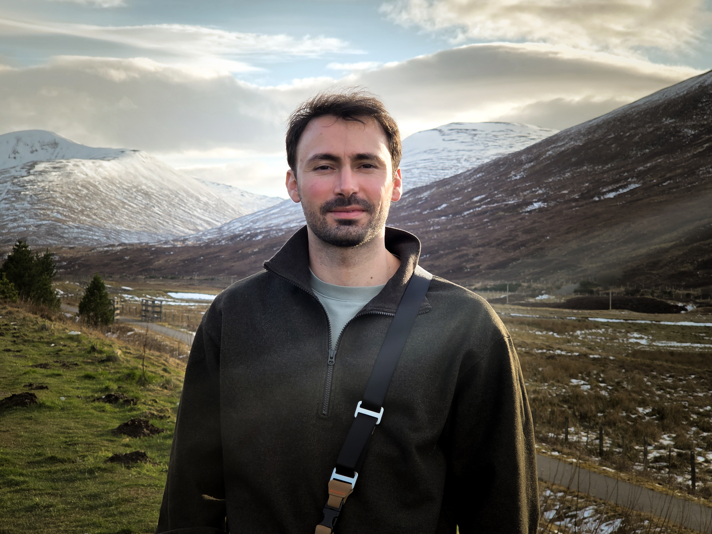
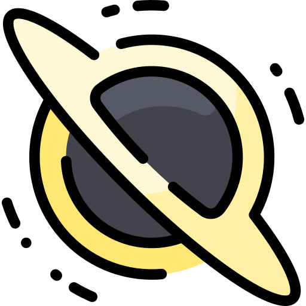
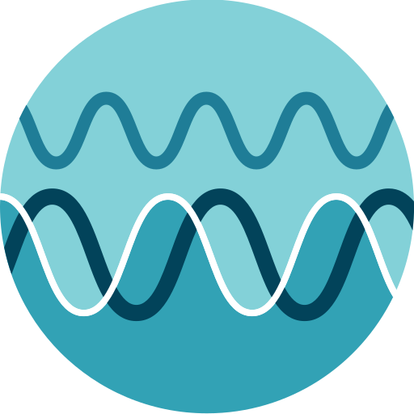

Theoretical Astrophysicist
Postdoctoral Researcher
Institute for Astronomy, University of Edinburgh | Royal Observatory
I am a postdoctoral researcher at the Institute for Astronomy, University of Edinburgh.
I study the formation and evolution of the first galaxies and black holes in the Universe, and how they shaped each other during the first billion years of cosmic history.
My work traces the growth of black holes from their earliest seeds to the supermassive giants powering the most distant quasars, combining semi-analytic models,
numerical simulations and observations.
Find out more about my research!

Research
What the earliest black holes were made of, where they could form, and how they became quasar progenitors.

The population of active galactic nuclei across cosmic time, and what JWST can and cannot see of it.
Why the earliest galaxies are so luminous, what stars they are made of, and whether black holes contribute.

What LISA and the next generation of detectors will reveal about black hole origins and mergers.
Get in touch